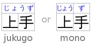

The ruby element
- Categories:
- Flow content.
- Phrasing content.
- Palpable content.
- Contexts in which this element can be used:
- Where phrasing content is expected.
- Content model:
- See prose.
- Content attributes:
- Global attributes
- DOM interface:
- Uses
HTMLElement.
The ruby element allows one or more spans of phrasing content to be marked with
ruby annotations. Ruby annotations are short runs of text presented alongside base text, primarily
used in East Asian typography as a guide for pronunciation or to include other annotations. In
Japanese, this form of typography is also known as furigana.
The content model of ruby elements consists of one or more of the following
sequences:
-
One or more phrasing content nodes or
rbelements. - One or the other of the following:
- One or more
rtorrtcelements -
An
rpelement followed by one or morertorrtcelements, followed by anrpelement.
- One or more
The ruby, rb, rtc, and rt elements can be used for
a variety of kinds of annotations, including in particular (though by no means limited to) those described
below. For more details on Japanese Ruby in particular, and how to render Ruby for Japanese, see
Requirements for Japanese Text Layout. [JLREQ]
At the time of writing, CSS does not yet provide a way to fully control the
rendering of the HTML ruby element. It is hoped that CSS will be extended to support
the styles described below in due course.
- Mono-ruby for individual base characters in Japanese
-
One or more hiragana or katakana characters (the ruby annotation) are placed with each ideographic character (the base text). This is used to provide readings of kanji characters.
<ruby>B<rt>annotation</ruby>
When no
rbelement is used, the base is implied, as above. But you can also make it explicit. This can be useful notably for styling, or when consecutive bases are to be treated as a group, as in the jukugo ruby example further down.<ruby><rb>base<rt>annotation</ruby>
In this example, notice how each annotation corresponds to a single base character.
<ruby>君<rt>くん</ruby><ruby>子<rt>し</ruby>は<ruby>和<rt>わ</ruby>して<ruby>同<rt>どう</ruby>ぜず。
君子は和して同ぜず。
This example can also be written as follows, using one
rubyelement with two segments of base text and two annotations (one for each) rather than two back-to-backrubyelements each with one base text segment and annotation (as in the markup above):<ruby>君<rt>くん</rt>子<rt>し</ruby>は<ruby>和<rt>わ</ruby>して<ruby>同<rt>どう</ruby>ぜず。
- Group ruby
-
Group ruby is often used where phonetic annotations don't map to discreet base characters, or for semantic glosses that span the whole base text. For example, the word "today" is written with the characters 今日, literally "this day". But it's pronounced きょう (kyou), which can't be broken down into a "this" part and a "day" part. In typical rendering, you can't split text that is annotated with group ruby; it has to wrap as a single unit onto the next line. When a ruby text annotation maps to a base that is comprised of more than one character, then that base is grouped.

Which can be marked up as follows:
<ruby>今日<rt>きょう</ruby>
- Jukugo ruby
-
Jukugo refers to a Japanese compound noun, ie. a word made up of more than one kanji character. Jukugo ruby is a term that is used not to describe ruby annotations over jukugo text, but rather to describe ruby with a behaviour slightly different from mono or group ruby. Jukugo ruby is similar to mono ruby, in that there is a strong association between ruby text and individual base characters, but the ruby text is typically rendered as grouped together over multiple ideographs when they are on the same line.
The distinction is captured in this example:
Which can be marked up as follows:
<ruby><rb>上<rb>手<rt>じよう<rt>ず</ruby>
In this example, each
rtelement is paired with its respectiverbelement, the difference with an interleavedrb/rtapproach being that the sequences of both base text and ruby annotations are implicitly placed in common containers so that the grouping information is captured.For more details on Jukugo Ruby rendering, see Appendix F in the Requirements for Japanese Text Layout [JLREQ] and Use Case C: Jukugo ruby in the Use Cases & Exploratory Approaches for Ruby Markup [RUBY-UC].
- Inline ruby
-
In some contexts, for instance when the font size or line height are too small for ruby to be readable, it is desirable to inline the ruby annotation such that it appears in parentheses after the text it annotates. This also provides a convenient fallback strategy for user agents that do not support rendering ruby annotations.
Inlining takes grouping into account. For example, Tokyo is written with two kanji characters, 東, which is pronounced とう, and 京, which is pronounced きょう. Each base character should be annotated individually, but the fallback should be 東京(とうきょう) not 東(とう)京(きょう). This can be marked up as follows:
<ruby>東<rb>京<rt>とう<rt>きょう</ruby>
This is also a case in which the
rpelement is useful. It can be inserted into the above example to provide the appropriate fallback when ruby layout is not supported:<ruby>東<rb>京<rp>(</rp><rt>とう<rt>きょう<rp>)</rp></ruby>
- Text with both phonetic and semantic annotations (double-sided ruby)
-
Sometimes, ruby can be used to annotate a base twice.
In the following example, the Chinese word for San Francisco (旧金山, i.e. “old gold mountain”) is annotated both using pinyin to give the pronunciation, and with the original English.

Which is marked up as follows:
<ruby> <rb>旧<rb>金<rb>山 <rt>jiù<rt>jīn<rt>shān <rtc>San Francisco </ruby>
In this example, a single base run of three base characters is annotated with three pinyin ruby text segments in a first (implicit) container, and an
rtcelement is introduced in order to provide a second single ruby text annotation being the city's English name.We can also revisit our jukugo example above with 上手 ("skill") to show how it can be annotation in both kana and romaji phonetics while at the same time maintaining the pairing to bases and annotation grouping information.

Which is marked up as follows:
<ruby> <rb>上<rb>手 <rt>じよう<rt>ず <rtc><rt>jou<rt>zu </ruby>
Text that is a direct child of the
rtcelement implicitly produces a ruby text segment as if it were contained in anrtelement. In this contrived example, this is shown with some symbols that are given names in English and French with annotations intended to appear on either side of the base symbol.<ruby> ♥<rt>Heart<rtc lang=fr>Cœur ☘<rt>Shamrock<rtc lang=fr>Trèfle ✶<rt>Star<rtc lang=fr>Étoile </ruby>
Similarly, text directly inside a
rubyelement implicitly produces a ruby base as if it were contained in anrbelement, andrtchildren ofrubyare implicitly contained in anrtccontainer. In effect, the above example is equivalent (in meaning, though not in the DOM it produces) to the following:<ruby> <rb>♥</rb><rtc><rt>Heart</rt></rtc><rtc lang=fr><rt>Cœur</rt></rtc> <rb>☘</rb><rtc><rt>Shamrock</rt></rtc><rtc lang=fr><rt>Trèfle</rt></rtc> <rb>✶</rb><rtc><rt>Star</rt></rtc><rtc lang=fr><rt>Étoile</rt></rtc> </ruby>
Within a ruby element, content is parcelled into a series of ruby segments. Each ruby segment is described by:
-
Zero or more bases, each of which is a DOM range that may contain text nodes or an
rbelement. - A base range, that is a range including all the bases.
-
Between zero and two ruby text containers which may correspond to explicit
rtcelements, or to sequences ofrtelements implicitly recognised as containers.
Each ruby text container is described by zero or more ruby text annotations each of which is a
DOM range that may contain text nodes or an rb element, and an annotations range
that is a range including all the annotations for that container.
Furthermore, a ruby element contains ignored segments. Ignored segments do not form part of the
document's semantics (they consist of some inter-element whitespace and rp
elements, the latter of which are used for legacy user agents that do not support ruby at all).
Each ruby text annotation in each ruby text container of a ruby segment is paired with the base at the same offset. If there are more bases than ruby text annotations for a given container, then its last annotation spans the remaining bases. If there are more ruby text annotations than there are bases, they are not paired.
At any particular time, the segmentation and categorisation of content of a
ruby element is the result that would be obtained from
running the following algorithm:
- Let root be the
rubyelement for which the algorithm is being run. - Let index be 0.
- Let ruby segments be an empty list.
- Let current bases be an empty list of DOM ranges.
- Let current bases range be null.
- Let current bases range start be null.
- Let current annotations be an empty list of DOM ranges.
- Let current annotations range be null.
- Let current annotations range start be null.
- Let current compound annotations be an empty list.
- Let current automatic base nodes be an empty list of DOM Nodes.
- Let current automatic base range start be null.
- If root has a
rubyelement ancestor, then abort these steps. - Process a ruby child: If index is equal to or greater than the number of child nodes in root, then run the steps to commit a ruby segment, return ruby segments, and abort these steps.
- Let current child be the indexth node in root.
- If current child is not a Text node and is not an Element node, then increment index by one and jump to the step labelled process a ruby child.
-
If current child is an
rpelement, then increment index by one and jump to the step labelled process a ruby child. -
If current child is an
rtelement, then run these substeps:- Run the steps to commit an automatic base.
- Run the steps to commit the base range.
- If current compound annotations contains two elements, then run the steps to commit a ruby segment.
- If current annotations is empty, set current annotations range start to the value of index.
- Create a new DOM range whose start is the boundary point (root, index) and whose end is the boundary point (root, index plus one), and append it at the end of current annotations.
- Increment index by one and jump to the step labelled process a ruby child.
-
If current child is an
rtcelement, then run these substeps:- Run the steps to commit an automatic base.
- Run the steps to commit the base range.
- Run the steps to commit current annotations.
- If current compound annotations contains two elements, then run the steps to commit a ruby segment.
-
Create a new compound annotation. It is described by the list of annotations returned
by running the steps to process an
rtcelement and a DOM range whose start is the boundary point (root, index) and whose end is the boundary point (root, index plus one). Append this new compound annotations at the end of current compound annotations. - If current compound annotations contains two elements, then run the steps to commit a ruby segment.
- Increment index by one and jump to the step labelled process a ruby child.
-
If current child is a
Textnode and is inter-element whitespace, then run these substeps:- If current annotations is not empty, increment index by one and jump to the step labelled process a ruby child.
-
If current compound annotations does not contain two elements, then run the following
substeps:
- Let lookahead index be set to the value of index.
- Peek ahead: Increment lookahead index by one.
- If lookahead index is equal to or greater than the number of child nodes in root, then abort these substeps.
- Let peek child be the lookahead indexth node in root.
-
If peek child is a
Textnode and is inter-element whitespace, then jump to the step labelled peek ahead. -
If peek child is an
rtelement, anrtcelement, or anrpelement, then set index to the value of lookahead index and jump to the step labelled process a ruby child.
- If current annotations is not empty or if current compound annotations is not empty, then run the steps to commit a ruby segment.
-
If current child is an
rbelement, then run these substeps:- Run the steps to commit an automatic base.
- If current bases is empty, then set current bases range start to the value of index.
- Create a new DOM range whose start is the boundary point (root, index) and whose end is the boundary point (root, index plus one), and append it at the end of current bases.
- Increment index by one and jump to the step labelled process a ruby child.
- If current automatic base nodes is empty, set current automatic base range start to the value of index.
- Append current child at the end of current automatic base nodes.
- Increment index by one and jump to the step labelled process a ruby child.
When the steps above say to commit a ruby segment, it means to run the following steps at that point in the algorithm:
- Run the steps to commit an automatic base.
- If current bases, current annotations, and current compound annotations are all empty, abort these steps.
- Run the steps to commit the base range.
- Run the steps to commit current annotations.
- Create a new ruby segment. It is described by a list of bases set to current bases, a base DOM range set to current bases range, and a first and second compound annotations that are respectively the first and second items of the current compound annotations list. Append this new ruby segment at the end of ruby segments.
- Let current bases be an empty list.
- Let current bases range be null.
- Let current bases range start be null.
- Let current compound annotations be an empty list.
When the steps above say to commit the base range, it means to run the following steps at that point in the algorithm:
- If current bases is empty, abort these steps.
- If current bases range is not null, abort these steps.
- Let current bases range be a DOM range whose start is the boundary point (root, current bases range start) and whose end is the boundary point (root, index).
When the steps above say to commit current annotations, it means to run the following steps at that point in the algorithm:
- If current annotations is not empty and current annotations range is null let current annotations range be a DOM range whose start is the boundary point (root, current annotations range start) and whose end is the boundary point (root, index).
- If current annotations is not empty, create a new compound annotation. It is described by an annotations list set to current annotations and a range set to current annotations range. Append this new compound annotation at the end of current compound annotations.
- Let current annotations be an empty list of DOM ranges.
- Let current annotations range be null.
- Let current annotations range start be null.
When the steps above say to commit an automatic base, it means to run the following steps at that point in the algorithm:
- If current automatic base nodes is empty, abort these steps.
-
If current automatic base nodes contains nodes that are not
Textnodes, orTextnodes that are not inter-element whitespace, then run these substeps:- It current bases is empty, set current bases range start to the value of current automatic base range start.
- Create a new DOM range whose start is the boundary point (root, current automatic base range start) and whose end is the boundary point (root, index), and append it at the end of current bases.
- Let current automatic base nodes be an empty list of DOM Nodes.
- Let current automatic base range start be null.